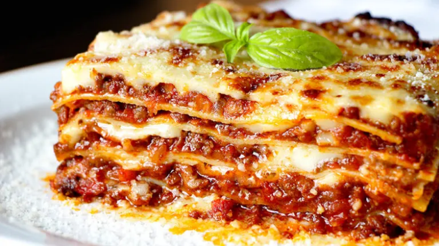

Lasagna

Description
This is the original recipe for lasagna, past around by generations of italian nonas. Weĺl learn how to make this delicious dish entirely from scratch, with home made lasagna noodles, bolognese sauce, and bechemel sauce.
Ingredients
Bolognese sauce
- 600g Beef
- 300g Pancetta
- 1 Onion
- 2 Carrots
- 1 Celery brach
- 200ml Red wine
- 800g Peeled tomatoes or tomato sauce
- 50ml Milk
- 3Tsp Olive oil
- Salt
- Black pepper
Noodles
- 200g All purpose flour
- 2 Large eggs
- 1-2Tsp Olive oil
- Salt
Béchamel
- 80g Butter
- 80g All purpose flour
- 750ml Milk
- Nutmeg
- Salt
- Black pepper
- 200g Parmesan cheese
Steps
Bolognese
- Cut off the pancetta skin
- Cut the pancetta into small squares
- Put the pancetta into pan over medium heat. Stir when needed
- While the pancetta cooks, cut the vegetables into small squares
- Add a drizzle of olive oil to pan with the pancetta
- Add the vegetables into the pan
- Add a pinch of salt
- Cook everything on medium heat until the onion and the carrots turn soft
- Add the beef
- Turn up the heat to medium high and stir nicely
- Once the meat changes color, add one glass of red wine
- Keep cooking until the alcohol evaporates
- Add the tomato sauce or chopped tomatoes
- Once the sauce starts boiling, turn the heat down to low and cover the pan, but leave a crack so the steam can get out
- The sauce need to cook for 2-4 hours. It's a lot! But the more time it cooks, the better the flavors set in. Be patient! If it starts to become dry in the process, add a bit of water
- Once done, add salt and papper to taste
- Add milk to balance the acidity
Noodles
- Sift 200g of flour into a bowl
- Add a pinch of salt
- Crack 2 eggs
- Add a drizzle of olive oil
- Stir nicely
- Finish the dough with your hands
- No need to knead much. Just combine the ingredients well
- Cover and leave it to rest for 20 minutes
- Before running the dough through the pasta maker, stretch it a bit with a rolling pin
- If you don't have a pasta maker, stretch the dough with a roller pin until it starts to become a bit transparent
- Cut the dough into sheets of aprox. 10x12 cm. You should get about 17 or so sheets
- Cook the pasta in plenty of boiling salted water. Best to cook in 2 batches so they don't stick to each other
- Rinse pasta in cold water
- Place the pasta on a cloth to dry. Careful to not break them!
Béchamel
- Melt the butter in a pan
- Add the flour to the pan
- Sauté the flour for 2-3 minutes on medium heat
- Add the milk cold and turn up the heat to high
- Stir well. The flour dissolves in the cold milk nicely
- The béchamel needs to be stirred constantly until it thickens
- Once it starts boiling, turn the heat down to medium and cook fro 2-3 more minutes
- Remove the béchamel from the heat and add salt, black pepper and nutmeg to taste
- Cover with cling film to prevent skin from forming
Final steps
- Grate the cheese
- Preheat the oven to 180°C with top and bottom heat
- Grease the mold or a baking dish with butter
- Cover the bottom with béchamel
- Place a layer of pasta on top
- On top of the pasta, place the bolognsese
- Drizzle some more béchamel on top of the bolognese
- Sprinkle some cheese
- Repeat (pasta, bolognese, béchamel, cheese)
- Last layer should with a nice big layer of béchamel and plenty of cheese
- Bake for 45 minutes, last 5 minutes with grill at 250°C
- Let it rest for 10-15 minutes before serving
- Enjoy!
Home